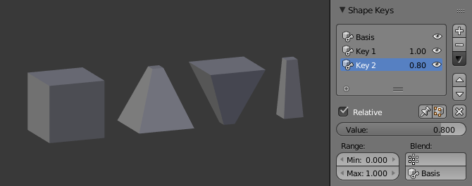
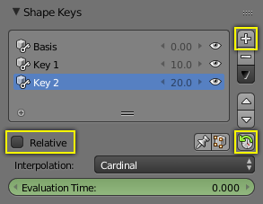

Workflow¶
Relative Shape Keys¶
- In Object Mode, add a new shape keys via the Shape Key panel with the
+button. - “Basis” is the rest shape. “Key 1”, “Key 2”, etc. will be the new shapes.
- Switch to Edit Mode, select “Key 1” in the Shape Key panel.
- Deform mesh as you want (do not remove or add vertices).
- Select “Key 2”, the mesh will be changed to the rest shape.
- Transform “Key 2” and keep going for other shape keys.
- Switch back to Object Mode.
- Set the Value for “Key 1”, “Key 2”, etc. to see the transformation between the shape keys.
In the figure below, from left to right shows: “Basis”, “Key 1”, “Key 2”
and mix (“Key 1” 1.0 and “Key 2” 0.8) shape keys in Object Mode.

Relative Shape Keys example.
Absolute Shape Keys¶
- Add sequence of shape keys as described above for relative shape keys.
- Uncheck the Relative checkbox.
- Click the Reset Timing button.
- Switch to Object Mode.
- Drag Evaluation Time to see how the shapes succeed one to the next.

Absolute Shape Keys workflow.
By adding a driver or setting keyframes to Evaluation Time you can create an animation.
参见
Shape Key Operators
There are two modeling tools used to control Shape Keys and are found in Edit Mode.